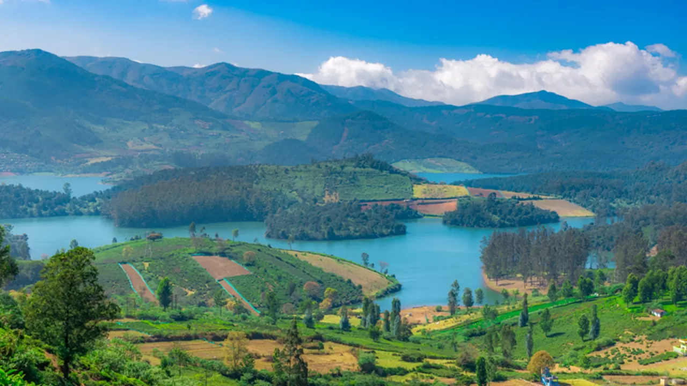

Avalanche Lake
Imagine waking up to a dreamlike sunrise over the misty mountains, spending a whole day hiking through lush woods and fishing in the blue waters of a serene lake. The Avalanche Lake in Ooty has that and more to offer to travellers looking to be lost in the beauty of nature.
Hidden away from the commotions of urban jungles is the Avalanche Lake, a natural, crystal blue freshwater body. Nestled between the green slopes of the Nilgiris, the Avalanche Lake is a picture-perfect location set just over 20 km from Ooty town. The lake, with its refreshing blue waters and soothing greenery of the surrounding woods, is a treat for anyone in search of a getaway destination to escape the fatigue of mundane life. The lake has some of the best views of the Nilgiris, overlooking the undulating hills draped in perfectly aligned tea shrubs and the opulent greenery of the woods, all in the background of a picturesque lake always veiled in a white fog. The Avalanche Lake and its surroundings are a pristine tract of the Western Ghats, immaculately maintained with the help of local tribes. The Avalanche Lake will be an enthralling experience for anyone who wants a getaway spot to escape into the raw beauty of Nature and be lost and undisturbed in its serenity.
Avalanche Lakeshore is one of the best camping spots in Ooty. Set your camp on the shores, and wake up to the enchanting view of the sun rising over the mist-clad mountains. The woods around the lake have winding trails that lead you to some of the best hidden treasures in Ooty. The lake is open for fishing after the monsoons. The nearby trout hatchery has all the basic gear and essentials you need in order to spend your afternoons relaxing while engaging in some trout fishing in the lake. Pack your bags and head to the Avalanche Lake to escape the screaming madness of city life and enjoy the tranquillity and pristine beauty of Nature.